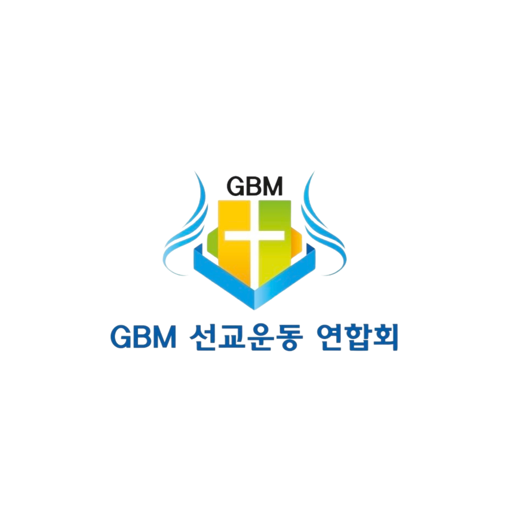

비즈니스를 통한 선교.
하나의 부르심. 전 세계적 영향력.
Business as Mission. One Calling. Global Impact.
“너희로 믿고 그 이름을 힘입어 생명을 얻게 하려 함이니라”
요한복음 20:31
GBM의 비전
비즈니스와 선교의 통합으로 하나님 나라를 세워가는 네 가지 비전입니다.
기드온 300 후원자
300명의 기드온 후원자를 통한 자립 기반 구축
100개 교회 개척
100개 교회 개척 및 현지 제자 양성
치앙마이 BAM 허브
치앙마이 중심 거점 BAM 허브 구축
훈련과 파송 시스템
BAM 사역자를 위한 훈련과 파송 시스템
핵심 사역 분야
GBM이 집중하는 다섯 가지 핵심 사역입니다.
킹덤 비즈니스 런칭
Kingdom Business Launching
선교사 훈련 및 파송
Missionary Training & Sending
글로벌 네트워크 형성
Global BAM Network
교회 개척 및 제자훈련
Church Planting & Discipleship
후원 캠페인 운영
Support Campaigns
최근 소식
소개·인사말
세계 비즈니스 선교운동 연합회 — Global BAM Movement
GBM은 이런 공동체입니다
비즈니스와 선교(BAM)를 하나로 통합하여, 선교지에 자립 가능한 킹덤 비즈니스를 세우고 후원자·선교사·BAM 기업가를 연결하는 글로벌 네트워크입니다.
비전
치앙마이 중심의 BAM 허브와 100개 교회 개척, 300명의 기드온 후원자를 통한 자립 기반 위에 세계 선교의 새로운 길을 엽니다.
미션
비즈니스를 통한 선교(Business as Mission)로 선교지에 자립 가능한 킹덤 비즈니스를 세우고, 후원자·선교사·BAM 기업가를 연결합니다.
핵심 가치
하나의 부르심, 자립, 그리고 연합 — 교파를 초월하여 서로 존중하고 배려하며 상생의 HARMONIZE를 이루어 갑니다.
대표 인사말
GBM 선교운동 연합회를 찾아주신 여러분을 환영합니다.
세계 비즈니스 선교운동 연합회(Global BAM Movement)는 비즈니스와 선교를 하나로 통합하여, 선교지에 자립 가능한 킹덤 비즈니스를 세우고 후원자·선교사·BAM 기업가를 연결하는 글로벌 네트워크입니다.
2025년 7월 24일 서울 테헤란 오피스빌딩에서의 창립총회를 시작으로, 태국 치앙마이를 거점 삼아 “비즈니스를 통한 선교, 하나의 부르심, 전 세계적 영향력”의 비전을 향해 나아가고 있습니다.
“너희로 믿고 그 이름을 힘입어 생명을 얻게 하려 함이니라”(요한복음 20:31) — 이 말씀 위에서 여러분의 기도와 동역을 부탁드립니다.
GBM 선교운동 연합회 대표이 정 환
선릉 일터교회 비전
서울 강남 선릉에 세워질 GBM의 일터교회는 일상과 예배가 만나는 열린 공간입니다.
제1호 교회
예배, 말씀, 기도, 영적 회복 — 100개 교회 비전의 첫 번째 교회
임원·그룹별 사무공간
테이블 미팅이 가능한 유연한 업무 공간
세미나 공간
전문 강사 세미나 상시 운영
힐링카페
교제, 격려, 비전 공유가 이루어지는 힐링 공간
☕ 건강·문화·재테크 등 다양한 세미나에 일반인도 누구나 편하게 참여할 수 있습니다.
조직도
운영본부
- 사무국
- 전략기획실
- 재무관리팀
- 홍보·미디어팀
선교사역국
- BAM 지원팀
- 프로젝트 개발팀
- 선교 협력팀
훈련센터
- 훈련기획
- 리더십 훈련
- 청년 BAM 인큐베이터
지역 네트워크
- 아시아
- 아프리카
- 중남미
- 중동
- 유럽
후원자·파트너 센터
- 기드온 300
- 교회·단체 제휴
걸어온 길
GBM 창립총회
서울 테헤란 오피스빌딩에서 창립총회 개최
치앙마이 BAM 카페 허브 프로젝트 착수
선교사·사역자를 위한 워크스페이스 & 선교 하이브리드 허브
제1회 BAM 워크샵
BAM 사역자와 후원자가 함께한 첫 워크샵
Gideon 300 후원자 모집 시작
자립 기반 구축을 위한 기드온 300 캠페인 개시
BAM 교육 파이프라인 1기 모집
한국어 교육 + 직업훈련 + 선교 파송 파이프라인
선릉 일터교회 설립
서울 강남 선릉 일터교회 [추후 업데이트 / TBD]
사역/사업 안내
비즈니스와 선교가 하나 되는 GBM의 다섯 가지 핵심 사역
핵심 사역 분야
킹덤 비즈니스 런칭
카페, 직업교육, 스타트업 등 선교지에 자립 가능한 비즈니스를 창업합니다.
선교사 훈련 및 파송
자립형 선교사를 위한 BAM 아카데미를 운영합니다.
글로벌 네트워크
BAM 기업가, 후원자, 선교사를 연결하는 플랫폼을 만들어 갑니다.
교회 개척 및 제자훈련
현지 공동체 중심의 교회를 개척하고 제자를 세웁니다.
후원 캠페인
Gideon 300 등 정기 후원자를 동원하는 캠페인을 운영합니다.
추진 중인 프로젝트
☕ 치앙마이 BAM 카페 허브
선교사와 사역자를 위한 워크스페이스 + 선교 하이브리드 공간
🏗️ BAM 기반 근로자 선발 프로그램
한국 건설 산업과 연계한 이주 근로자 선교
🎓 BAM 교육 파이프라인
한국어 교육 + 직업훈련 + 선교 파송으로 이어지는 교육 과정
참여 방법
정기 후원자 되기
기드온 300과 함께 GBM의 자립 기반을 세워 주세요.
BAM 멘토/코치 참여
비즈니스 경험으로 선교지 창업가를 세워 주세요.
사역자/선교사 참여
BAM 아카데미에서 훈련받고 선교지로 파송받으세요.
교회/단체 제휴
교회와 단체가 GBM의 동역 파트너가 될 수 있습니다.
공지·소식
GBM의 새로운 소식과 공지사항을 전해 드립니다.
갤러리
GBM의 사역 현장을 사진으로 만나 보세요.
오시는 길
GBM의 거점과 연락처를 안내해 드립니다.
🌏 국제 본부
태국 치앙마이 (Chiang Mai, Thailand)
치앙마이를 중심 거점으로 BAM 허브를 세워 갑니다.
🇰🇷 한국 베이스
서울 강남구 선릉 (선릉역 인근)
선릉 일터교회 설립 예정 [추후 업데이트 / TBD]
🚇 대중교통 안내
- 2지하철 2호선 선릉역 하차
- 수인분당수인분당선 선릉역 하차
문의하기
궁금하신 점이 있다면 언제든지 문의해 주세요.
후원·헌금
여러분의 후원이 선교지의 자립과 복음의 열매가 됩니다.
왜 GBM을 후원해야 할까요?
GBM은 일회성 지원이 아니라, 선교지에 자립 가능한 킹덤 비즈니스를 세워 스스로 열매 맺는 선교의 구조를 만들어 갑니다. 여러분의 후원은 카페와 직업교육과 스타트업이 되고, 훈련받은 선교사의 파송이 되고, 현지 공동체의 교회가 됩니다.
후원 방법
💛 정기후원 / 일시후원
매월 정기적으로, 또는 원하실 때 일시적으로 후원하실 수 있습니다.
🏦 계좌 이체
계좌번호 추후 업데이트 / Bank account TBD
후원금은 이렇게 사용됩니다
모든 재정은 투명하게 관리됩니다. [상세 재정 보고 추후 업데이트 / TBD]
- 선교지 킹덤 비즈니스 런칭 지원 (카페, 직업교육, 스타트업)
- BAM 아카데미 — 선교사 훈련 및 파송
- 현지 공동체 중심의 교회 개척과 제자훈련
- 글로벌 BAM 네트워크와 후원 캠페인 운영